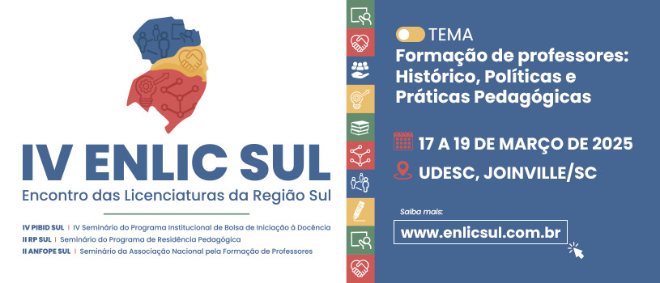

Eventos
IV Encontro das Licenciaturas da Região Sul (ENLIC)

Data: 17-19/03
Local: Universidade de Santa Catarina - UDESC
O que você encontrará no evento?
- Palestras com especialistas
- Workshops interativos
- Oportunidade de networking
Digital Summit
Data: 24-26/05
Local: Plataforma Online
O que você encontrará no evento?
- Painéis de discussão sobre as últimas tendências digitais
- Acesso a conteúdos exclusivos e insights estratégicos
- Oportunidades de networking com profissionais do setor